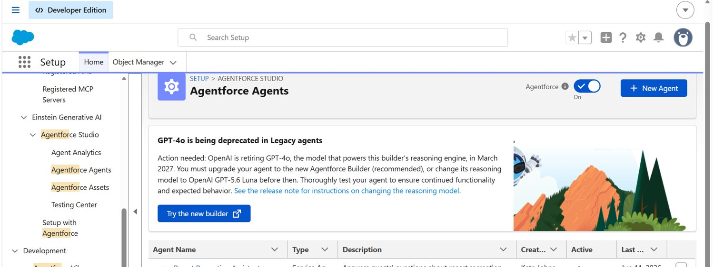
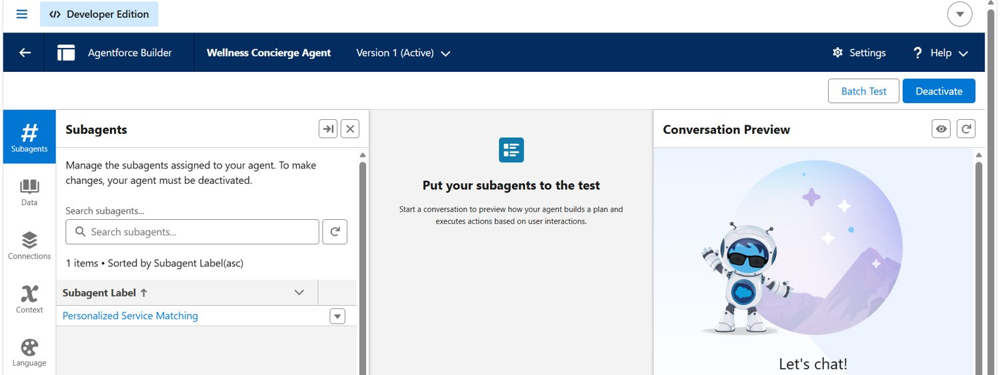
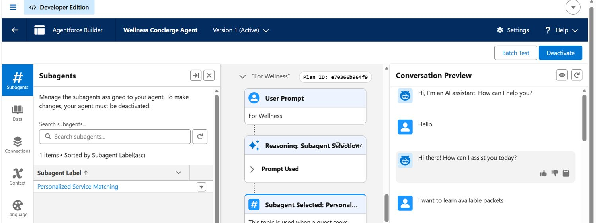
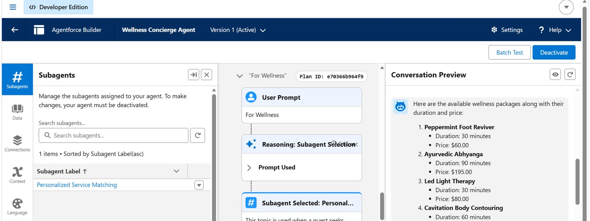
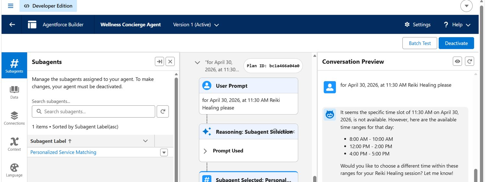
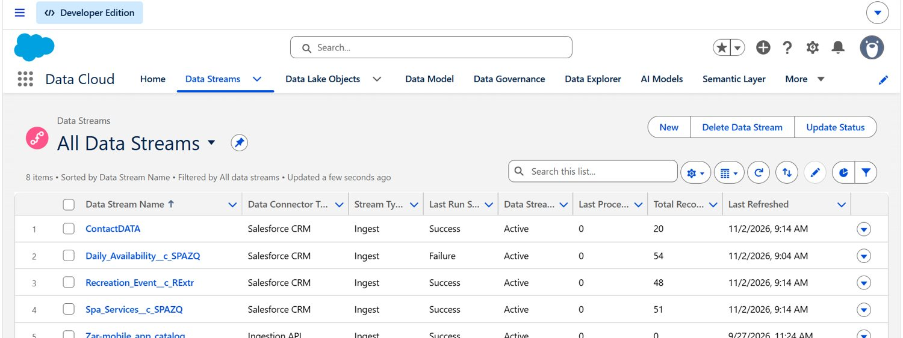
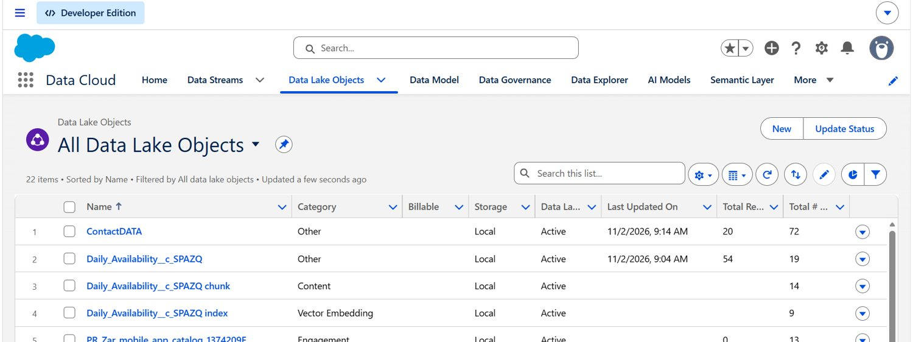
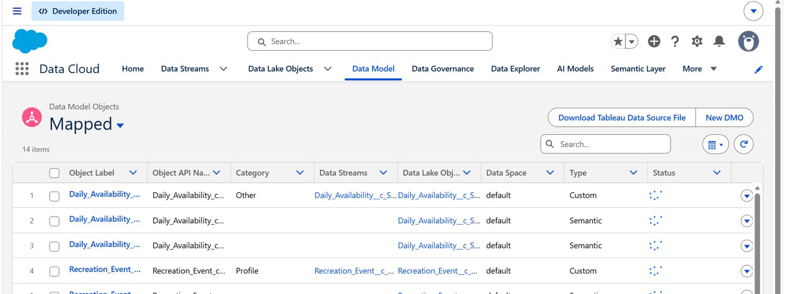

Discover
Help users explore available wellness services, package durations and prices through conversation.
An Agentforce conversational assistant for wellness service discovery, with a Salesforce Data Cloud foundation using records ingested from a separate Salesforce organization.
Explore project evidence ↗← Full portfolioGuests exploring spa and wellness options need clear information about services, durations, prices and suitable appointment times. Information spread across service catalogs, scheduling records and customer systems makes the experience harder to navigate.
The design challenge was to create a conversational interface that could guide users toward relevant services and respond constructively when a requested time was not available.
Help users explore available wellness services, package durations and prices through conversation.
Use the Personalized Service Matching subagent for wellness-related requests.
In the supplied test conversation, the agent suggested alternative appointment windows when a requested slot was unavailable.
The project brought source records from a separate Salesforce org into Salesforce Data Cloud. Data Streams, Data Lake Objects (DLOs), and mapped Data Model Objects (DMOs) provide a structured foundation for downstream experiences.
Service and related CRM records maintained separately from the Agentforce environment.
CRM-source ingestion configurations, including spa services and availability data.
Ingested objects appear in Data Lake Objects; mapping is shown in Data Model.
Wellness Concierge Agent and Personalized Service Matching subagent, demonstrated through conversation previews.
One test response lists wellness packages with names, durations and prices, helping a guest compare options without manually opening each catalog record.
The builder preview shows the selection of the Personalized Service Matching subagent, with instructions geared toward tailored wellness needs.
For a requested Reiki Healing appointment on April 30, 2026 at 11:30 AM, the test response indicates that time is unavailable and offers alternative windows.
The screenshots show Data Streams, Data Lake Objects and mapped Data Model Objects, including both successful and failed stream-run statuses that merit monitoring.
Screenshots are drawn from the supplied Salesforce Developer Edition environment. Select any image to open it larger. These are project screenshots, not a public live-agent demo.








The agent asked for clarification when “available packets” could mean more than one type of package.
A sample test explored an unavailable time and received other time ranges, instead of claiming the request had been booked.
Data Stream screens show mixed run results. Monitoring failures and confirming source-to-target mapping remain part of reliable data operations.